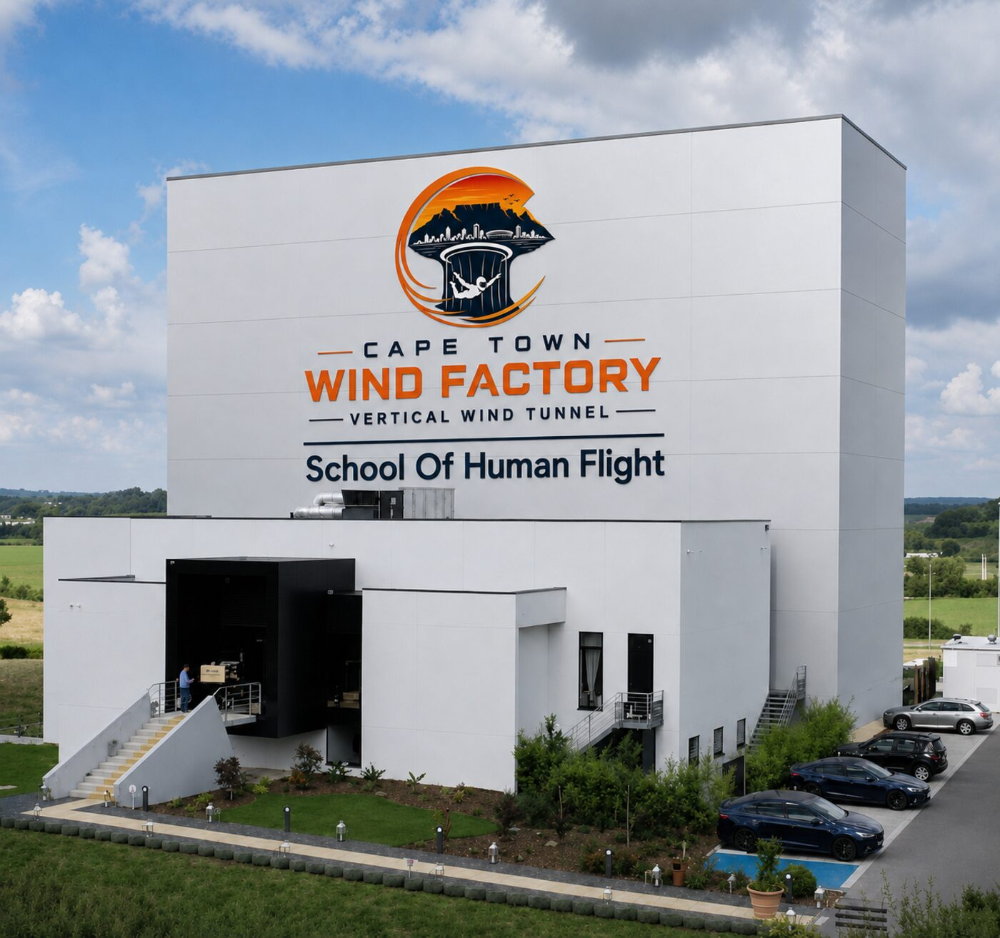
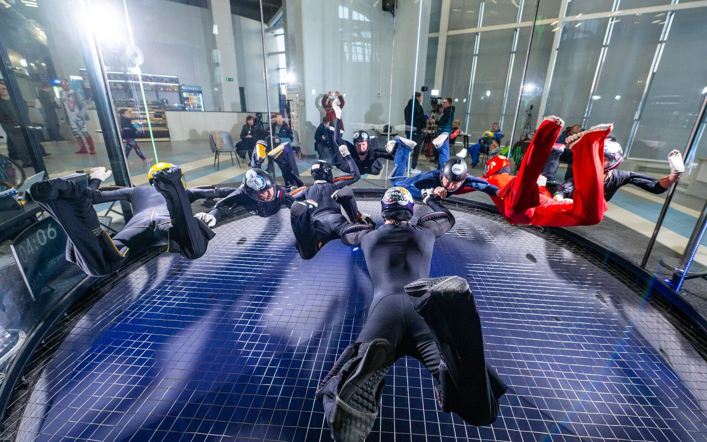

Investment & partnership proposal
The Cape Town Vertical Wind Tunnel Project
A landmark sporting, tourism and economic development opportunity for the Western Cape. Proposed for the V&A Waterfront, Cape Town; venue to be finalised.
Executive summary
A world-class indoor skydiving and human flight facility.
The Cape Town Vertical Wind Tunnel Project is a proposed world-class indoor skydiving and human flight facility, positioned at the V&A Waterfront, designed to establish the city as a leading international destination for indoor skydiving, adventure tourism and international competition.
At its centre is the TT65 PRO vertical wind tunnel, a 6.5-metre diameter, competition-grade flight chamber manufactured by Tunnel Tech, which will make it one of the most advanced indoor skydiving facilities internationally and the first of its scale on the African continent. The chamber's size and airflow performance suit advanced competitive disciplines capable of attracting international athletes and teams, while also supporting the inclusive Indoor Para Skydiving programme run through the Cape Town School of Human Flight.
Total development cost is R200 million. 50% of this funding has already been secured, and the project is in active discussions with additional investors for the balance.

Location
The V&A Waterfront.
Cape Town's most-visited precinct and one of Africa's leading tourism destinations. The location pairs a globally recognised, high-footfall setting with a facility that can draw international athletes and competitions year-round, reaching first-time visitors, families, elite athletes, schools and corporate clients on one site.
The facility
- 6.5-metre diameter, competition-grade flight chamber, approximately 24 metres high
- Climate-optimised airflow systems
- High-performance athlete training facilities
- Spectator viewing and mezzanine areas
- Professional media and broadcasting infrastructure: multi-camera, high-speed and slow-motion capture, remote access and training-debrief capability
- Reception, retail, corporate-hosting, youth-programme and educational spaces
Why the TT65 PRO
- Designed to FAI competition standard; supports 4-way and 8-way Formation Skydiving and Dynamic events
- 6.5 m diameter, 24 m height: among the largest chambers in operation internationally
- Two levels of 54 mm glass for spectator visibility
- 55 dB(A) noise emissions, low enough for a mixed-use tourism precinct
- Industry-leading energy efficiency relative to comparable tunnels
- Tunnel Tech has delivered seven facilities internationally in under six years and supports consulting, construction, training, operations and maintenance
Market opportunity
Ahead of the international growth curve.
Indoor skydiving is a rapidly expanding global industry exceeding €1 billion annually, with over 300 operational facilities worldwide and more than 20 million flights recorded to date. The FAI recognised Indoor Para Skydiving in 2025 as its first-ever para-sports discipline, with a World Cup debuting in 2026 and the inaugural FAI World Championships in 2027. A facility of this scale positions Cape Town to compete for major sanctioned events.
As a permanent, weather-independent attraction, the facility is expected to support increased tourism activity, international athlete and team visitation, year-round visitor spending, and corporate and event tourism, with economic impact extending into accommodation, hospitality, retail and transport across the Waterfront precinct.

Diversified revenue model
Five revenue streams.
The facility is designed to operate across multiple streams, reducing reliance on any single customer segment.
- Public indoor skydiving experiences and professional athlete training
- International training camps and competition hosting
- Coaching, instruction and corporate events
- Hospitality, conferencing and retail
- Sponsorship, branding, media and broadcasting
Partnership opportunities
Ways to participate.
- Development and investment partnerships
- Venue naming rights
- Championship and event sponsorship
- Corporate branding, hospitality and tourism partnerships
- Youth development sponsorship and media/broadcasting partnerships
A detailed use-of-funds breakdown and financial model will be shared with prospective investors as part of due diligence.
Development timeline
Four phases after site and funding finalisation.
- Pre-phaseSite & fundingVenue confirmation within the V&A Waterfront and close of remaining investment
- Phase 1≈ 3 monthsEngineering and final design
- Phase 28–10 monthsConstruction and fit-out
- Phase 3≈ 2 monthsTesting and commissioning
- Phase 4≈ 1 monthSoft launch and public opening
Community impact & inclusion
Jobs, skills and an inclusive programme.
The project will create employment across construction and operations, including instructors, technical and engineering staff, management, hospitality and event and media personnel, and support skills development in coaching, technical operations and event management, with pathways for young people through partnerships with schools and community organisations.
The facility is also proposed to house the Cape Town School of Human Flight. The TT65 PRO's chamber size is a direct safety and accessibility advantage for that programme, easing assisted entry and supported flight for wheelchair users relative to smaller tunnels.
Key considerations
What we are managing.
- Final venue confirmation and any planning or environmental approvals within the V&A Waterfront precinct
- Close of the remaining R100 million investment
- Construction timeline and cost management through delivery
- Market uptake relative to comparable international facilities
The opportunity
R100 million to complete funding and bring the project to construction.
The first facility of this scale on the continent, backed by 50% committed funding and a clear path to delivery. A landmark sporting and tourism asset for the Western Cape, and a launchpad for South Africa on the international stage.